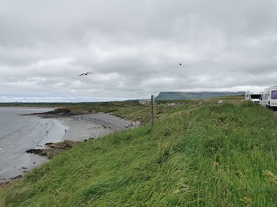

Places for an adventure
Sligo has a plenty of places to go for a hike, visit for its beauty or admire for its splendid views. It will have you covered for all of the seasons, be it summer or winter. Whether you would like to go for a mountain climb or swim in the ocean or a lake, you will find a place for yourself. If you are into camping there are spots to do it safely, but if you prefer to stay in a hotel or caravan park, there will be a lot of options available.
Doorly Park

Doorly Park located only 15 minutes walk from Sligo Town Centre is a great place for an easy walk of up to 6 kilometres. You can follow a trail along the banks of the Garavogue river and admire local wildlife in the mix of woodland and wetland environment. There is an access to local sports complex as well as a carpark near the kayak club. It is a perfect place for a family picnic. For more information click here
Hazelwood

Hazelwood Demesne located 5 kilometres outside of Sligo Town. It features a series of beautiful paths along a lakeshore and through the woodland. There is a carpark with a scenic view onto Ox Mountains and has a great place to have a BBQ. One thing to mention is that it used to be a favourite walk of Ireland's national poet W.B. Yeats who described it in his works. For more information click here
Knocknarea

Knocknarea is probably a most iconic landmark in Co. Sligo. It is located by village of Strandhill and it reaches a height of 327 metres. On its peak there is Queen Maeve's Cairn which is believed to be Europe's eldest unexcavated Neolithis passage tomb. There are few ways to climb it from easy to moderate. If you are interested in climbing it click here
Rosses Point
An amazing village just 8 kilometres from Sligo Town itself with rich history and many points of interest. There are multiple amenities and places to visit. It has multiple paths for a hike as well as 3 beaches both rocky and sandy. It also features a golf course with a view of an ocean. For more details click here
Strandhill

A very touristic village 7 kilometres from Sligo Town and for many good reasons. With often events attracting both locals and visitors and many attractions accessible around it has a plenty to offer for anyone willing to visit. It has legendary beaches and scenic routes for hiking. If you would like to learn more click here